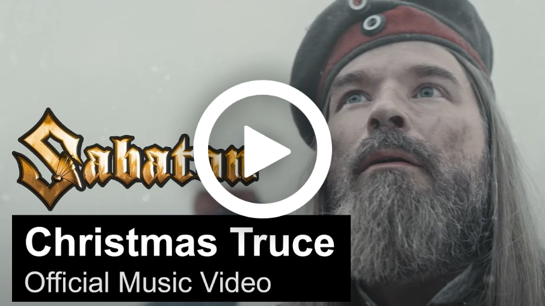
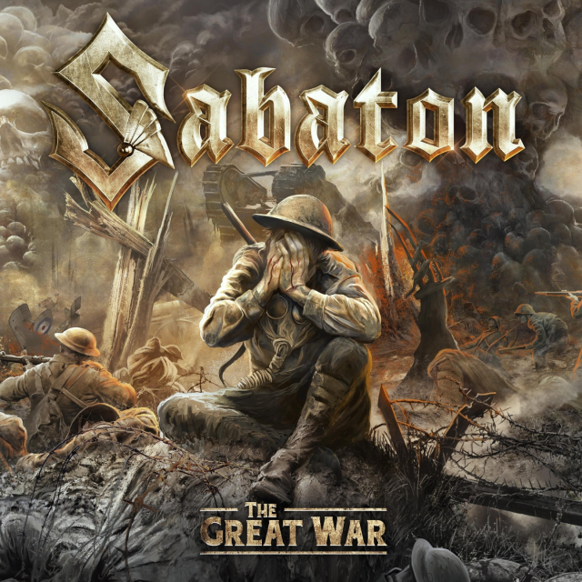
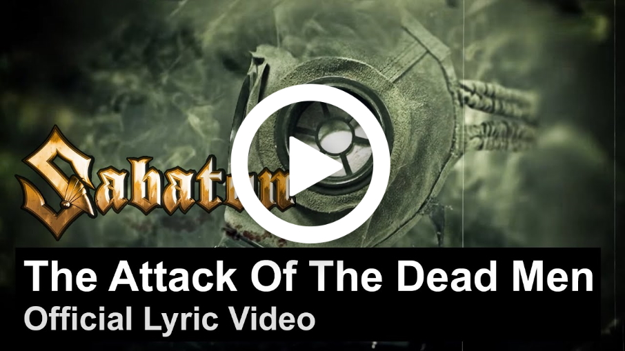
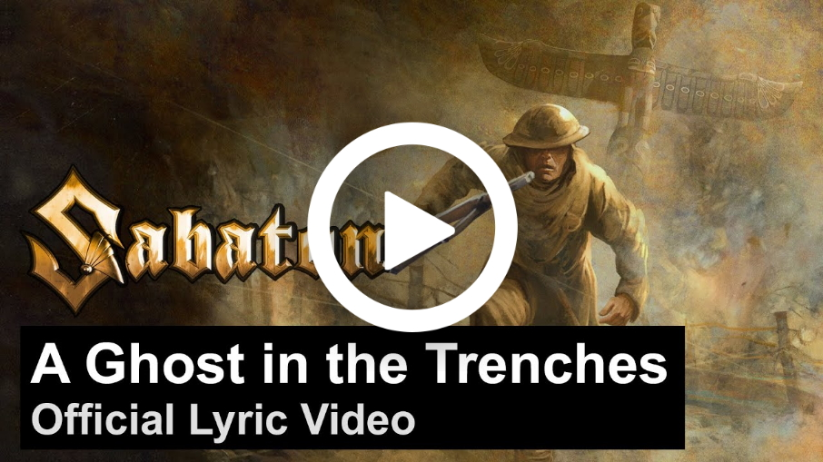
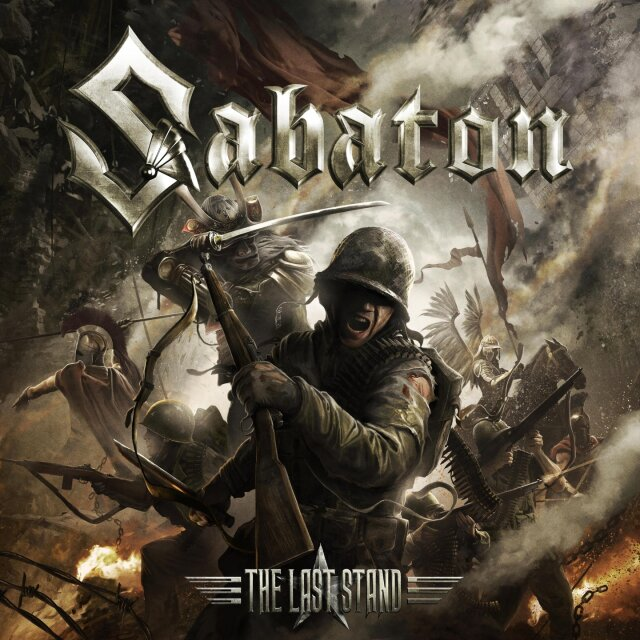
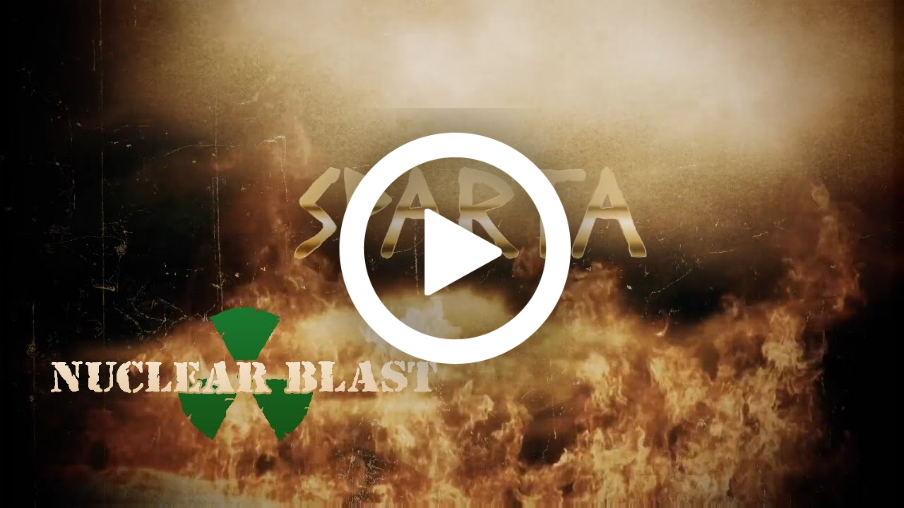
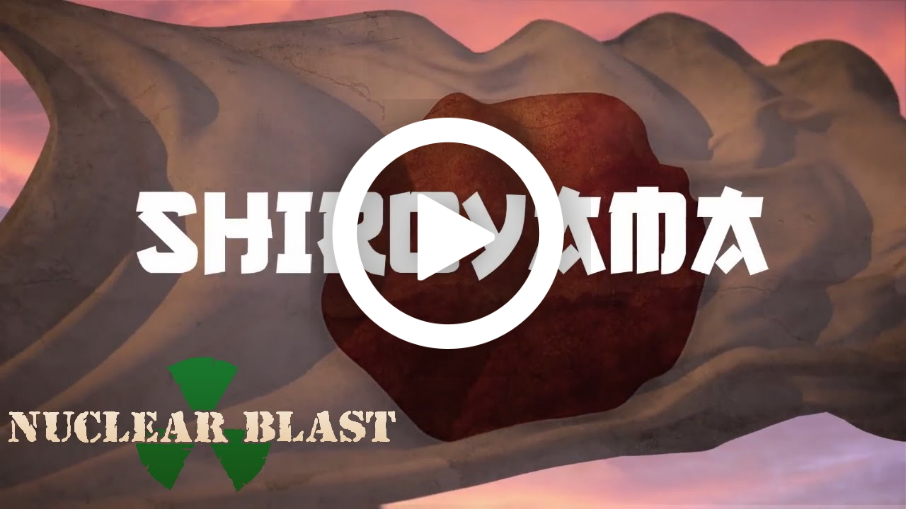

Sus albumes y la historia tras sus mejores hits
The War to End All Wars

Su último album hasta la fecha. Es su segúndo album totalmente tematizado con la Primera Guerra Mundial, luego de 'The Great War'. En este, trata de seguír contando las increibles historias, milagros y tragedias ocurridas en la considerada "guerra más inhumana" de la historia.
Canciones Destacadas
Christmas Truce
En los diferentes frentes de guerra en 1914, el primer año de la "Gran Guerra", se acercaba la navidad. Los soldados, alejados de sus familias, deciden realizar un alto al fuego y juntarse con el bando enemigo a festejar. Una historia que demuestra la frialdad de la guerra y como los soldados son solo peones en un conflicto al que fueron obligados a dispararse, y que realmente no son tan diferentes.
The Unkillable Soldier
Sir Adrian Carton De Wiart nació en Bélgica en 1880, pero peleó para el imperio británico en la primera y segunda guerra mundial. Si bién no era mas que un "simple soldado", fue herido en la cara, cabeza, estómago, tobillo, pierna, cadera y oreja, sobrevivió a dos accidentes aéreos, cavó un túnel para escapar de un campo de prisioneros y se arrancó a bocados sus propios dedos cuando un médico se negó a amputárselos. así, se lo conoce como "El hombre que no podia ser asesinado". Tras finalizada la guerra declaro: "Francamente, he disfrutado de la guerra"
The Great War
Estrenado el 19 de Julio de 2019, es el primer album que tiene a Tommy Johansson como guitarrista. Es el primer album conceptualizado en la Primera Guerra Mundial, y narra historias épicas ocurridas en la misma, donde incluso simples soldados que estaban destinados a morir se vuelven heroes.
Canciones Destacadas
The Attack of the Dead Men
En la batalla de Osowiec de 1915, el ejercito Alemán ordena bombardear la fortaleza, defendida por 900 soldados rusos, con un arsenal de gas de clorina. Tras liberar el gas, 7000 soldados alemanes se adentraron en la fortaleza con máscaras de gas, esperando que todos los soldados estuvieran muertos o al menos, imposibilitados de pelear. Increiblemente 100 de los 900 soldados, desfigurados y escupiendo sangre y pedazos de sus propios pulmones pelearon contra los alemanes, obligandolos a retirarse.
A Ghost in the Trenches
El francotirador Francis "Peggy" Pegahmagabow, quien fue capaz de asesinar 378 alemanes y capturar otros 300 durante la guerra, fue uno de los más condecorados de Canada y el mundo. Su mayor hazaña ocurrió en la Segunda Batalla de Ypres, donde logró infiltrarse cual "fantasma en las trincheras" en las lineas enemigas, además de grandes hazañas como lider en la Segunda Batalla de Passchendaele y al Batalla de Scarpe. Francis se enlistó en Agosto de 1914 y continuó peleando hasta 1919, habiendo servido y sobrevivido a lo largo de toda la guerra.
The Last Stand
Este albúm es considerado hasta hoy en día como el máximo éxito internacional de la banda. Como su nombre indica, esta tematizado en batallas donde uno de los lados de la misma se encuentra en un "ultimo aliento", siendo ampliamente superados en números en cuanto a cantidad de soldados pero, sin embargo, presentan batalla e intentan pelear por su honor y su tierra hasta la muerte.
Canciones Destacadas
Sparta
La batalla de las termópilas es definitivamente una de las batallas de el estilo "ultimo aliento" más conocidas y épicas de la historia de la humanidad. Como se demuestra en la pelicula "300", Leonidas y sus 300 Espartanos lucharon contra gigantescas hordas de Persas que asediaban Esparta. Tras la traición de uno de los suyos, que le reveló al rey Xerxes de Persia las entradas no resguardadas a Esparta, los espartanos lucharon hasta morir en las cercanias a su tierra, siempre con gran honor y amor hacia Esparta y su rey.
Shiroyama
La batalla de Shiroyama en 1877 marca el fin de la era de los legendarios Samurais. Comandados por Saigo Takamori, los últimos 500 guerreros al final de la rebelión, se encontraban dando su último aliento en el Monte Shiroyama. 500 Samurais, con espadas y lanzas, pelearon contra 30000 soldados imperiales que contaban con rifles y cañones a muerte. Al final de la batalla solo quedaban 40 Samurais que, siguiendo sus costumbres, persiguieron a los soldados que ya se encontraban en movimiento hasta la muerte del último de ellos.